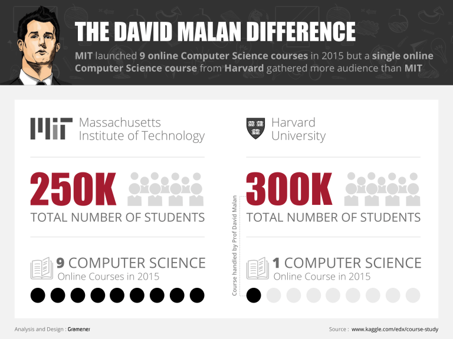
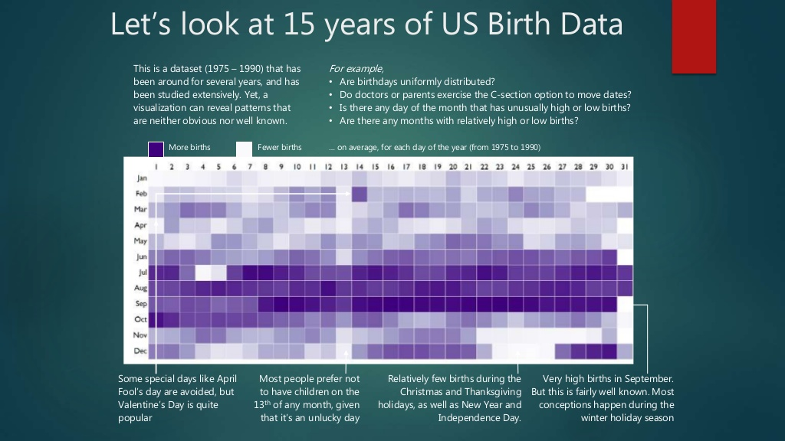
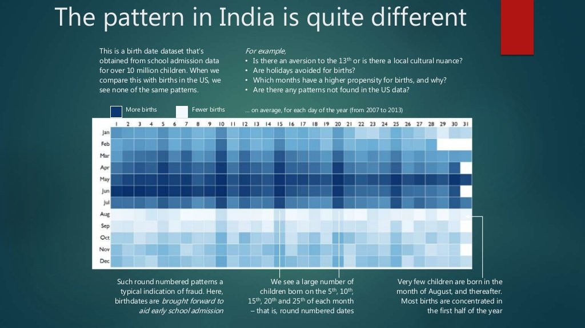
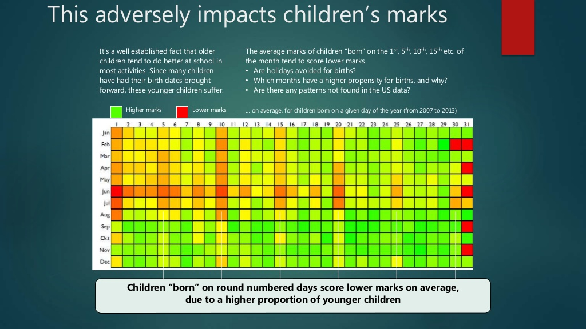
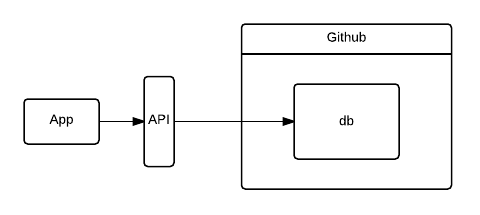
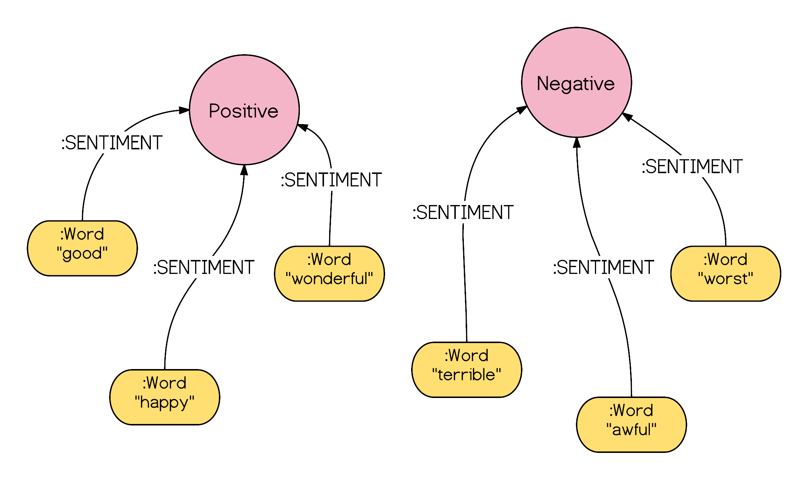
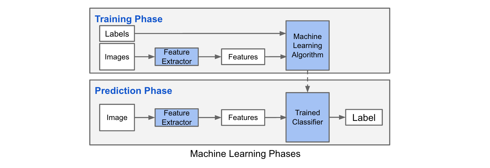

How To Use Data
By - Mukul Taneja
Email - mukul.taneja@gramener.com
Who Am I and What I do
- My name is Mukul Taneja.
- I have 4 years of experience in this industry.
- I work with Gramener as a Senior Data Specialist.
- Gramener is a Data Science & Data Visualization Company.
- I have responsibilities to create Data Driven Applications.
- I use Public/Private domain data for these applications.
Our Goal
We at Gramener, have a motive to make all understand about the power of data.
What to do with Data?
Know Intersting Facts & Draw Decisions
About Edx
- Founded by Harvard University and MIT in 2012.
- edX is an online learning destination and MOOC provider.
- It has a mission to offer high-quality courses from the world’s best universities and institutions to learners everywhere.
About Dataset
- It is named as Online Courses from Harvard and MIT
- I took this dataset from Kaggle.
- It has 290 rows and 23 columns.
- It is publically available dataset at https://www.kaggle.com/edx/course-study/data.
David J. Malan really rocked in 2015!

Insights - MIT vs Harvard
- MIT has launched more number of courses than Harvard across the years.
- 2015 was the prominent year for computer science courses where MIT has managed to launch 9 courses and Harvard has launched only 1 course.
- Harved has managed to attract 300k students in 2015 where MIT got 250k students in 2015.
- MIT has targetted Higher Degree students where Harvard has targetted college students though their courses.
US Birth Dataset

Indian Birth Dataset

Indian Children Makrs Dataset

Application Architecture

Github Repos Visual
Popular Programming Languages
4 Different Rankings
TIOBE Index
TIOBE Index uses the search volume in popular search engines eg. Google, Bing, Yahoo, Baidu
The RedMonk Programming Language Rankings
It uses a programming language’s GitHub and Stack Overflow presence as a measure of popularity
The PYPL (PopularitY of Programming Language) Index
It uses the service of Google Trends to rank programming languages
The IEEE Spectrum Ranking of Programming Languages
It considers 12 factors from 10 sources. The 10 sources are Google Search, Google Trends, Twitter, GitHub, Stack Overflow, Reddit, Hacker News, CareerBuilder, Dice and IEEE Xplore Digital Library.
Understand Data & Learn from it
Sentiments

User Behavior
Predictive Modeling
Predictive analytics is an area of statistics that deals with extracting information from data and using it to predict trends and behavior patterns.

Training a Image Classification Model

Predictive Analytics Process
Define Project
Define the project outcomes, deliverable, scope of the effort, business objectives, identify the data sets that are going to be used.
Data Collection
Data mining for predictive analytics prepares data from multiple sources for analysis. This provides a complete view of customer interactions.
Data Analysis
Data Analysis is the process of inspecting, cleaning and modelling data with the objective of discovering useful information, arriving at conclusion.
Statistics
Statistical Analysis enables to validate the assumptions, hypothesis and test them using standard statistical models.
Modelling
Predictive modelling provides the ability to automatically create accurate predictive models about future. There are also options to choose the best solution with multi-modal evaluation.
Deployment
Predictive model deployment provides the option to deploy the analytical results into everyday decision making process to get results, reports and output by automating the decisions based on the modelling.
Model Monitoring
Models are managed and monitored to review the model performance to ensure that it is providing the results expected
Name Classification
Objective
Make a Classifier to recognize human names.
Data Collection
NLTK Name Corpus
Data Analysis & Assumptions
Names ending in a, e and i are likely to be female,
while names ending in k, o, r, s and t are likely to be male
Modeling
nltk.NaiveBayesClassifier
Sentiment Analysis
- Sub field of Text Classification.
- It is used to tag text with classes such as Positive/Negative/Neutral
Why Sentiment Analysis?
- Marketing
- Social Media & Opinions
- Policatial Views
- Movie Reivews
- many more...
Sentiment Analysis on Live Data
Example - Real Time Tweets
Sentiment Analysis on Political Dataset
Example - Donald Trump Dataset
Understanding NaiveBayes Classifier
- It works on the concept of bag of words model.
- Probability Concept - The Naive Bayes algorithm is an intuitive method that uses the probabilities of each attribute belonging to each class to make a prediction.
- All the attributes are independents - Naive bayes simplifies the calculation of probabilities by assuming that the probability of each attribute belonging to a given class value is independent of all other attributes.
- Conditional Probability - The probability of a class value given a value of an attribute is called the conditional probability.
- By multiplying the conditional probabilities together for each attribute for a given class value, we have a probability of a data instance belonging to that class.
To make a prediction we can calculate probabilities of the instance belonging to each class and select the class value with the highest probability.
Understanding DecisionTree Classifier
- The decision tree classifiers organized a series of test questions and conditions in a tree structure.
- In the decision tree, the root and internal nodes contain attribute test conditions to separate recordes that have different characteristics. All the terminal node is assigned a class lable Yes or No.

Suicides in India

https://tedx.com
About Tedx
- TED is a nonprofit devoted to spreading ideas, usually in the form of short, powerful talks.
- TED is a global community, welcoming people from every discipline and culture who seek a deeper understanding of the world.
- They believe passionately in the power of ideas to change attitudes, lives and, ultimately, the world.
Talks I like the most
My philosophy for a happy life | Sam Berns
- Focus on things which you CAN do instead of thinking for which you CANT do.
- Surround with people like you want to be like.
- Keep moving forward in life, keep opening up doors and windows for new things.
Draw your future | Patti Dobrowolski
- SEE IT, FEEL IT, DO IT
The Man behind Linux | Linus Torvalds
- It is OK if you are not a visionary, No feel to be ashamed.
- If you focus on the ground and fix the little holes, you can be a great person by that way also.
Thoughts on humanity, fame and love | Shah Rukh Khan
- Spread love, feel happy and love humanity.
About Dataset
- I took this dataset from Kaggle.
- It has 2550 rows and 17 columns.
- It is publically available dataset at https://www.kaggle.com/rounakbanik/ted-talks/data
Predict Tedx Speakers Occupation
Example - Speakers Occupations
Last Few Words...
- Understanding Data depends on instinct and interest.
- No Course can teach us to how to work on data but practise can make things perfect.
- Stat with small things and go for large...cheers!!